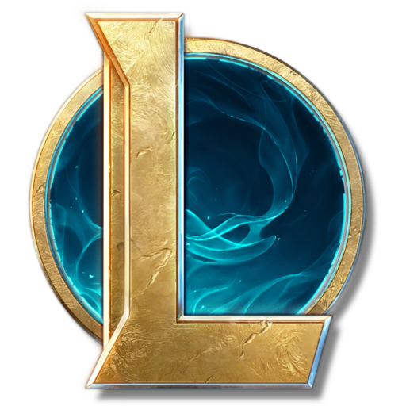
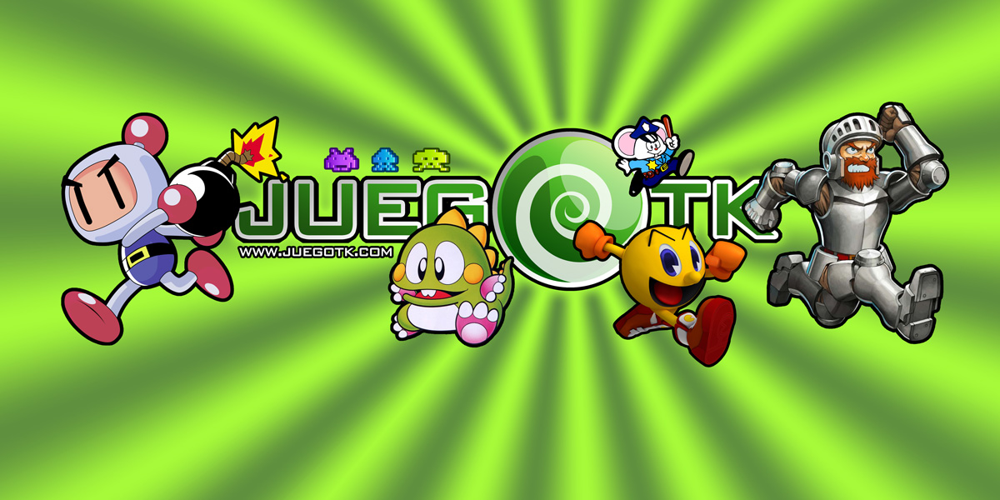

09/03/26
Citar 3 paginas web que les gusten y expliquen el porque las eligieron.

Universo de League of LegendsPor el 2014 la pagina era un bloque de texto con al descricion de cada campeón, en la actualidad tiene un diseño mucho más atrativo y detallado con links a comics, videos y más material relacionado a los personajes.

Es una portal de juegos de la generacion del 70/80, es una pagina que parece simple y tiene detalles como una seccion de noticias, estadisticas y encuestas. Lamentablemente van a ser casi 10 años desde la ultima actualización que tuvo la página.
 Juegos.com
Juegos.com
Otra plataforma de juegos, pero esta con un aspecto ams social donde uno se puede dejar comentarios en juegos y conectar con otras personas, ademas tiene un sistema de logros que se va llenadno a medida que se completan juegos en la plataforma.